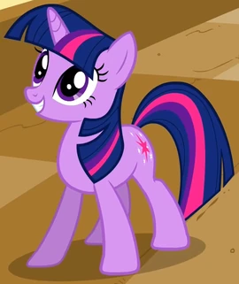
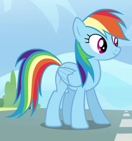
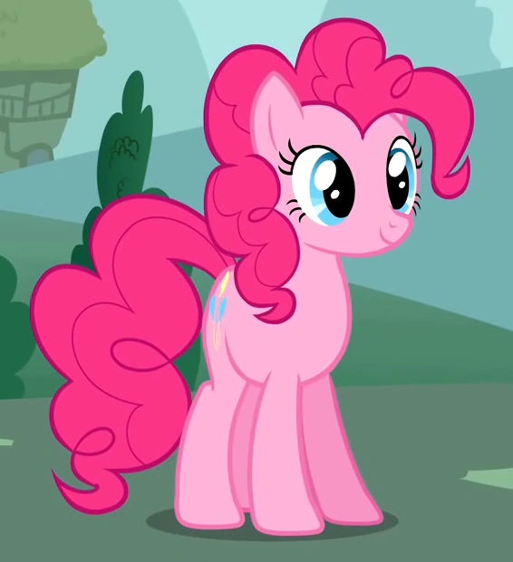
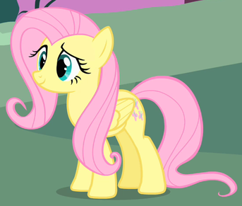

"My Little Pony: La magia de la amistad (en inglés, My Little Pony: Friendship Is Magic) fue una serie de televisión de fantasía animada canadiense-estadounidense basada en la línea de juguetes y obras animadas My Little Pony, de Hasbro.
La serie se estrenó el 10 de octubre de 2010 en The Hub (que pasó a llamarse Discovery Family el 13 de octubre de 2014) y concluyó el 12 de octubre de 2019." (fragmentos de la wikipedia de la serie :9)
Literalmente, desde que tengo conciencia conocía My Little Pony y me gustaba la serie, aunque yo tenía 2 años cuando la serie se estrenó, y recién este año voy a poder terminar de ver la serie
(antes no tenía acceso a las últimas temporadas :´D)
|  Twilight Sparkle |
 Rarity |
 Rainbow Dash |
|  Pinkie Pie |
 Fluttershy |
 Applejack |